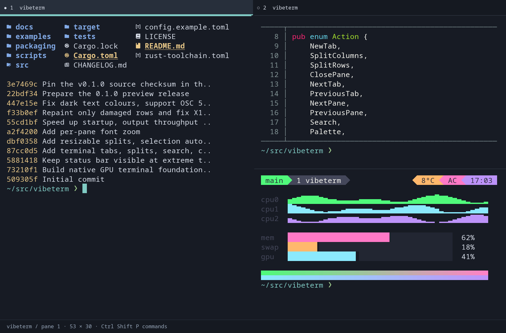

vibeterm
A fast, native GPU terminal for Linux.

Why vibeterm
Starts in ~31 ms
Fonts load and your shell starts while the GPU initialises, so a window is ready before you notice.
Light and quiet
The lowest memory of the terminals we measured, 0% CPU when idle, and only changed rows are redrawn.
Tabs and splits
Drag dividers to resize, open new panes in your current folder, and zoom one pane's text without touching the others.
Plays well with tmux and nvim
Programs can copy to your clipboard, and powerline and block characters fill each cell exactly.
Performance
| Measurement | vibeterm 0.1 | Alacritty 0.17 | Kitty 0.49 | Konsole 26.08 |
|---|---|---|---|---|
| Startup, until a command runs | 31 ms | 57 ms | 134 ms | 97 ms |
| Idle memory (RSS) | 66 MiB | 95 MiB | 125 MiB | 100 MiB |
| Coloured Unicode output | 134 MiB/s | 109 MiB/s | 100 MiB/s | 43 MiB/s |
| Plain text output | 138 MiB/s | 109 MiB/s | 161 MiB/s | 35 MiB/s |
| Full-screen redraws | 167 MiB/s | 131 MiB/s | 204 MiB/s | 46 MiB/s |
Medians of repeated runs on one machine (Ryzen 7 5800X3D, Radeon RX 9070 XT, KDE Wayland), each terminal with default settings and a 110×32 grid. The best result in each row is bold. Throughput is how fast a terminal consumes output, not frame rate or input latency. Reproduce it with scripts/compare.py; method and caveats are in docs/performance.md.
Install
Arch Linux and CachyOS
git clone https://github.com/lfreixial/vibeterm
cd vibeterm/packaging
makepkg -siOther distributions
Download vibeterm-0.1.0-x86_64-linux.tar.gz from the release page, then:
sha256sum -c vibeterm-0.1.0-x86_64-linux.tar.gz.sha256
tar -xzf vibeterm-0.1.0-x86_64-linux.tar.gz
./vibeterm-0.1.0-x86_64-linux/vibetermNeeds glibc 2.39 or newer (Ubuntu 24.04, Debian 13, Fedora 40 or later), Wayland or X11, and a Vulkan driver. OpenGL is used when Vulkan is unavailable.
From source
cargo build --release --locked
./target/release/vibetermStatus
vibeterm is an early preview. It's usable day to day, but it hasn't finished acceptance testing.
Not yet done: macOS and Windows, input-method composition (e.g. Chinese and Japanese), mixed-DPI monitors, the kitty keyboard and graphics protocols, and accessibility. See the changelog for details, and report issues on GitHub.